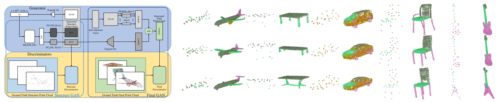
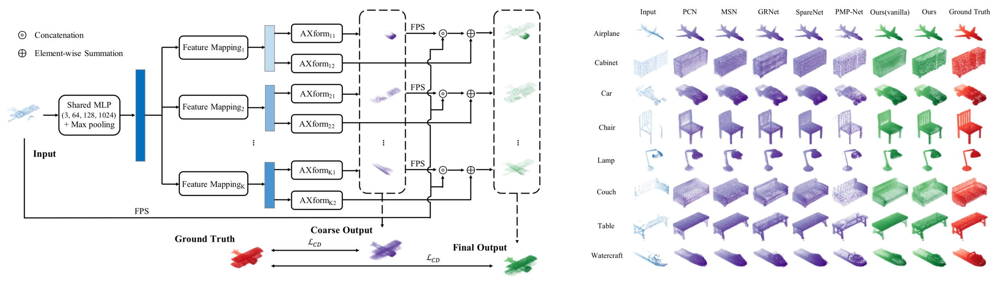
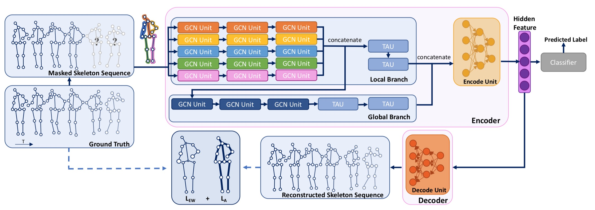
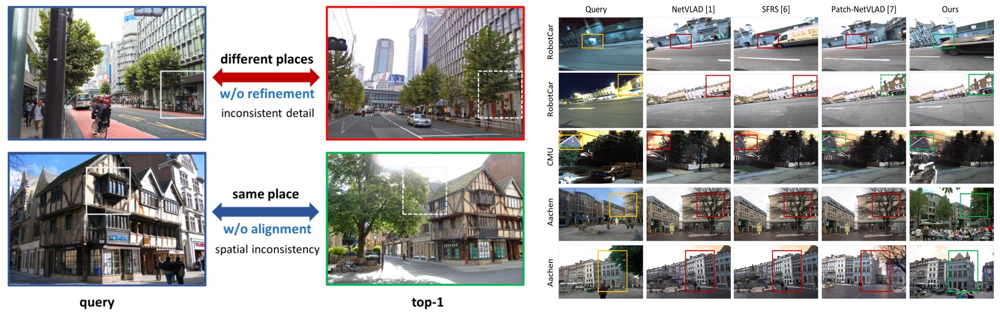
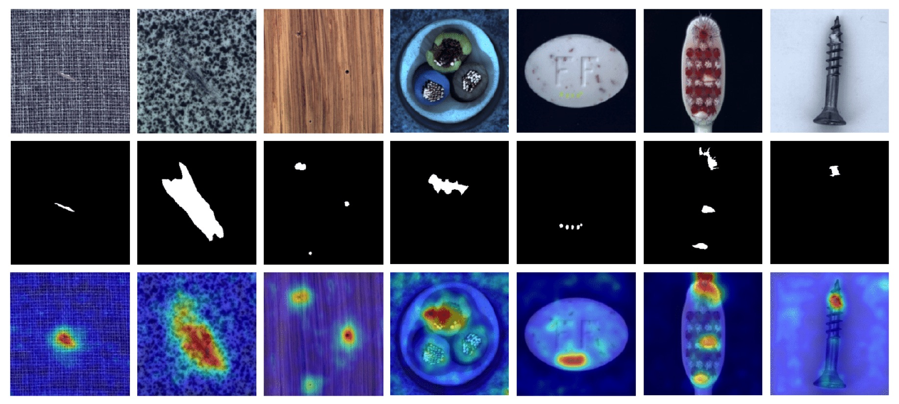
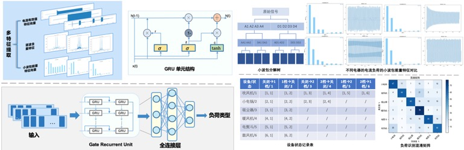

近期研究主题
三维点云生成
任务：可控地生成复杂点云结构，在数据增强、工业设计、场景生成等领域有重要价值

三维点云补全
任务：给定一个残缺的点云（一般因遮挡、采集缺漏造成），补全其完整结构，在自动驾驶、场景识别等领域有重要价值

基于骨架的行为识别
任务：基于骨架信息无监督地识别人体行为，在隐私保护环境下的监控识别等领域有重要价值

视觉定位
任务：给定照片识别照片所在的位置，在自动驾驶、机器人、室内导航等领域有重要价值

表面缺陷检测
任务：给定产品表面图像识别出其中的缺陷，在工业生产检测等领域有重要价值

电气指纹识别
任务：根据采集到的电气数据判断每一台电气设备的启动、运行和停止情况，在智能电网、双碳战略等领域有重要价值

部分论文列表
-
Hao Ren, Wu Ran, Xingson Liu, Haoran Ren, Hong Lu, Rui Zhang, Cheng Jin, Weakly-supervised Temporal Action Localization with Adaptive Clustering and Refining Network, ICME 2023
-
Kangliang Liu, Xiangcheng Du, Sijie Liu, Yingbin Zheng, Xingjiao Wu, Cheng Jin, DDT: Dual-branch Deformable Transformer for Image Denoising, ICME 2023
-
Weilin Wan, Weizhong Zhang, Cheng Jin, Pose-motion Video Anomaly Detection Via Memory-augmented Reconstruction And Conditional Variational Prediction, ICME 2023
-
王尚尚，金城，基于图像重构与语义差异识别的表面异常检测，计算机科学，2023(11) (code)
-
郑泉石，金城，基于自适应预测的2D人体姿态估计，计算机科学，2023(11)专辑 (code)
-
王威，杜响成，金城，基于上下文门控残差和多尺度注意力的图像重照明网络，计算机科学，2023(9) (code)
-
Haoran Ren, Hao Ren, Hong Lu, Cheng Jin, Weakly-supervised Temporal Action Localization with Regional Similarity Consistency, MMM 2023 (code)
-
Xiangcheng Du, Zhao Zhou, Yingbin Zheng, Tianlong Ma, Xingjiao Wu, Cheng Jin, Modeling Stroke Mask for End-to-End Text Erasing, WACV 2023 (paper)
-
Hao Zhang, Xin Chen, Heming Jing, Yingbin Zheng, Yuan Wu, Cheng Jin, ETR: An Efficient Transformer for Re-ranking in Visual Place Recognition, WACV 2023 (paper, code)
-
Hao Ren, Haoran Ren, Wu Ran, Hong Lu, and Cheng Jin, Weakly-supervised Temporal Action Localization with Multi-head Cross-modal Attention, PRICAI 2022 (paper, code)
-
Sibo Luo, Shangshang Wang, Yuan Wu, Cheng Jin, Memory Enhanced Spatial-Temporal Graph Convolutional Autoencoder for Human-related Video Anomaly Detection, PRCV 2022 (paper, code)
-
Yuan Wu, Yanlu Cai, Rui Feng, Cheng Jin, ST2PE: Spatial and Temporal Transformer for Pose Estimation, ICANN 2022 (paper)
-
Rui Cao, Kaiyi Zhang, Yang Chen, Ximing Yang, Cheng Jin, Point Cloud Completion via Multi-Scale Edge Convolution and Attention, ACM Multimedia 2022 (paper)
-
Haoyue Qiu, Mengmeng Duan, Yuan Wu, Cheng Jin, GLTA-GCN: Global-Local Temporal Attention Graph Convolutional Network for Unsupervised Skeleton-based Action Recognition, ICME 2022 (paper, code)
-
Jingwen Ye, Yining Mao, Jie Song, Xinchao Wang, Cheng Jin, Mingli Song, Safe Distillation Box, AAAI 2022 (paper)
-
Kaiyi Zhang, Ximing Yang, Yuan Wu, Cheng Jin, Attention-based Transformation from Latent Features to Point Clouds, AAAI 2022 (paper, code)
-
Ximing Yang, Yuan Wu, Kaiyi Zhang, Cheng Jin, CPCGAN: A Controllable 3D Point Cloud Generative Adversarial Network with Semantic Label Generating, AAAI 2021 (paper, code, poster, demo)
-
Zunlei Feng, Yongming He, Xinchao Wang, Xin Gao, Jie Lei, Cheng Jin, Mingli Song, One-sample Guided Object Representation Disassembling, NeurIPS 2020 (paper)
-
Yanlu Cai, Yuqing Li, Runyu Peng, Yipei Xu, Chenzhe Jin, Cheng Jin, Look into Multi-Person: A New Benchmark for Pose Estimation and Human Parsing, IEEE BigData 2020 (paper)
-
Kuncheng Fang, Lian Zhou, Cheng Jin, Yuejie Zhang, Kangnian Weng, Tao Zhang, Weiguo Fan, Fully Convolutional Video Captioning with Coarse-to-Fine and Inherited Attention, AAAI 2019 (paper)
-
Yuanfang Guo, Xiaochun Cao, Rui Wang, Cheng Jin, A New Data Embedding Method with a New Data Embedding Domain for JPEG Images, 2018 IEEE Fourth International Conference on Multimedia Big Data (BigMM), 1-5, 2018 (paper)
-
Fei Huang, Cheng Jin, Yuejie Zhang, Kangnian Weng, Tao Zhang, Weiguo Fan, Sketch-based image retrieval with deep visual semantic descriptor, Pattern Recognition, Volume 76, April 2018, Pages 537-548 (paper)
-
Yong Cheng, Fei Huang, Lian Zhou, Cheng Jin, Yuejie Zhang and Tao Zhang, A Hierarchical Multimodal Attention-based Neural Network for Image Captioning, SIGIR 2017 (short paper) (paper)
-
Fei Huang, Yong Cheng, Cheng Jin, Yuejie Zhang and Tao Zhang, Deep Multimodal Embedding Model for Fine-grained Sketch-based Image Retrieval, SIGIR 2017 (short paper) (paper)
-
Fei Huang, Cheng Jin, Yuejie Zhang and Tao Zhang, Towards Sketch-based Image Retrieval with Deep Cross-modal Correlation, ICME 2017 (paper)
-
Gongze Cao, Yezhou Yang, Jie Lei, Cheng Jin, Yang Liu, Mingli Song, TripletGAN: Training Generative Model with Triplet Loss, arXiv preprint arXiv:1711.05084, 2017 (paper)
-
Cheng Jin, Chenjie Li, Zheming Wang, Yuejie Zhang, Tao Zhang, Sketch-based Image Retrieval with a Novel BoVW Representation, MMM 2016 (paper)
-
Fei Huang, Yong Cheng, Cheng Jin, Yuejie Zhang and Tao Zhang, Enhancing Sketch-Based Image Retrieval via Deep Discriminative Representation, ECAI 2016 (paper)
-
Yong Cheng, Fei Huang, Cheng Jin, Yuejie Zhang and Tao Zhang, A Novel Cross-Modal Topic Correlation Model for Cross-Media Retrieval, ECAI 2016 (paper)
-
Zhixin Liu, Cheng Jin, Yuejie Zhang, Tao Zhang, Automatic Naming of Speakers in Video via Name-Face Mapping, CCL 2016: 424-436 (paper)
-
Xingmeng Zhang, Cheng Jin, Yuejie Zhang, Tao Zhang, Image Tag Recommendation via Deep Cross-Modal Correlation Mining, CCL 2016: 437-449 (paper)
-
YongQing Liang, Cheng Jin, Yuejie Zhang, Salient Region Detection with Convex Hull Overlap, CoRR abs/1612.03284, 2016 (paper)
-
Yong Cheng, Zhengxiang Cai, Rui Feng, Cheng Jin, Yuejie Zhang, Tao Zhang, Cross-Modal Image-Tag Relevance Learning for Social Images, ACM MultiMedia 2015 (short paper) (paper)
-
Cheng Jin, Wenhui Mao, Ruiqi Zhang, Yuejie Zhang, Xiangyang Xue, Cross-Modal Image Clustering via Canonical Correlation Analysis, AAAI 2015 (paper)
-
Cheng Jin, Zheming Wang, Tianhao Zhang, Qinen Zhu, Yuejie Zhang, A Novel Visual-Region-Descriptor-based Approach to Sketch-based Image Retrieval, ICMR 2015 (paper)
-
Yong Cheng, Zhixin Liu, Yun Zhao, Cheng Jin, Yuejie Zhang, Tao Zhang, People News Search via Name-Face Association Analysis, ICMR 2015 (short paper) (paper)
-
Shuai Ren, Cheng Jin, Chang Sun, Yuejie Zhang, Sketch-Based Image Retrieval via Adaptive Weighting. ICMR 2014 (paper)
-
Yuejie Zhang, Wei Wu, Yang Li, Cheng Jin, Xiangyang Xue, Jianping Fan, Automatic Name-Face Alignment to Enable Cross-Media News Retrieval. IJCAI 2013 (paper)
-
Ruijiang Li, Bin Li, Ke Zhang, Cheng Jin, Xiangyang Xue, Groupwise Constrained Reconstruction for Subspace Clustering, ICML 2012 (paper)
-
Yao Lu, Wei Zhang, Cheng Jin, Xiangyang Xue, Learning Attention Map from Images, CVPR 2012 (paper)
-
Xisheng He, Zhe Wang, Cheng Jin, Yingbin Zheng, Xiangyang Xue, A simplified multi-class support vector machine with reduced dual optimization, Pattern Recognition Letters 2012 (paper)
-
Cheng Jin, Chunlei Yang, Integrating Hierarchical Feature Selection and Classifier Training for Multi-Label Image Annotation, ACM SIGIR 2011 (paper)
-
Ruijiang Li, Bin Li, Cheng Jin, Xiangyang Xue, Xingquan Zhu, Tracking User- Preference Varying Speed in Collaborative Filtering, AAAI 2011 (paper)
-
Yuejie Zhang, Lei Cen, Cheng Jin, Xiangyang Xue and Jianping Fan, Learning Inter-Related Statistical Query Translation Models for English-Chinese Bi-Directional CLIR, IJCAI 2011 (paper)
-
Yuejie Zhang, Lei Cen, Wei Wu, Cheng Jin and Xiangyang Xue, Fusion of Multiple Features and Supervised Learning for Chinese OOV Term Detection and POS Guessing, IJCAI 2011 (paper)
-
Yiyang Gu, Cheng Jin, Xiangyang Xue, Quick matting: A matting method based on pixel spread and propagation, ICIP 2010 (paper)
-
Yuejie Zhang, Lei Cen, Cheng Jin, Xiangyang Xue and Ning Zhou, Bilingual Query Translation and Expansion for Supporting More Effective Cross-Language Image Retrieval, ACM Multimedia 2010 (paper)
-
Renzhong Wei, Hong Lu, Yingbin Zheng, Lei Cen, Cheng Jin, Xiangyang Xue, Weiguo Wu, How Context Helps: A Discriminative Codeword Selection Method for Object Detection, ICIP 2010 (paper)
-
Jian-Feng Chen, Hong Lu, Renzhong Wei, Cheng Jin, Xiangyang Xue, An effective method for video genre classification, CIVR 2010 (paper)